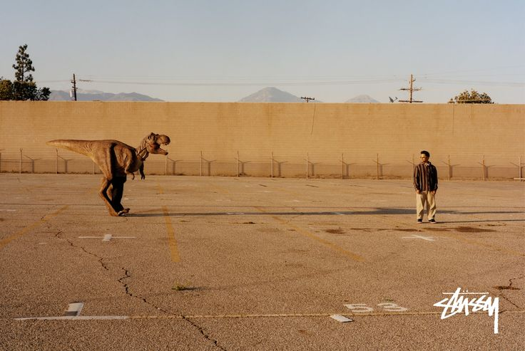
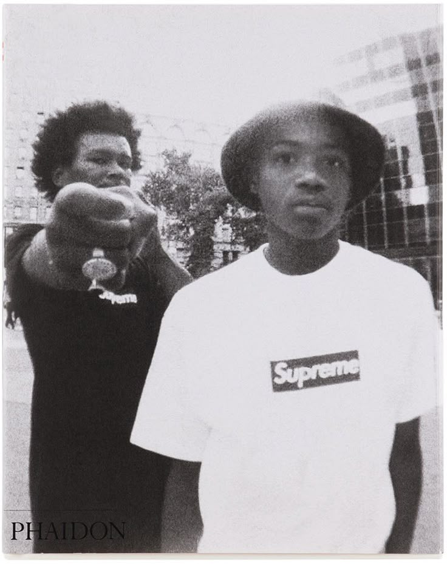
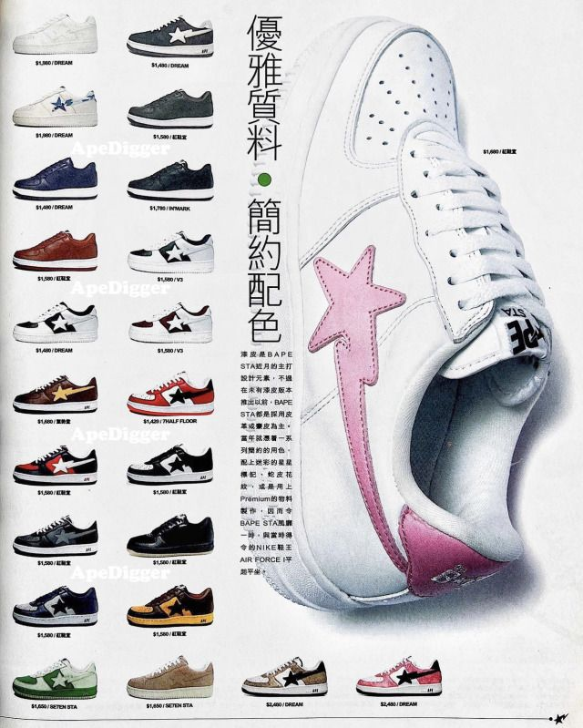
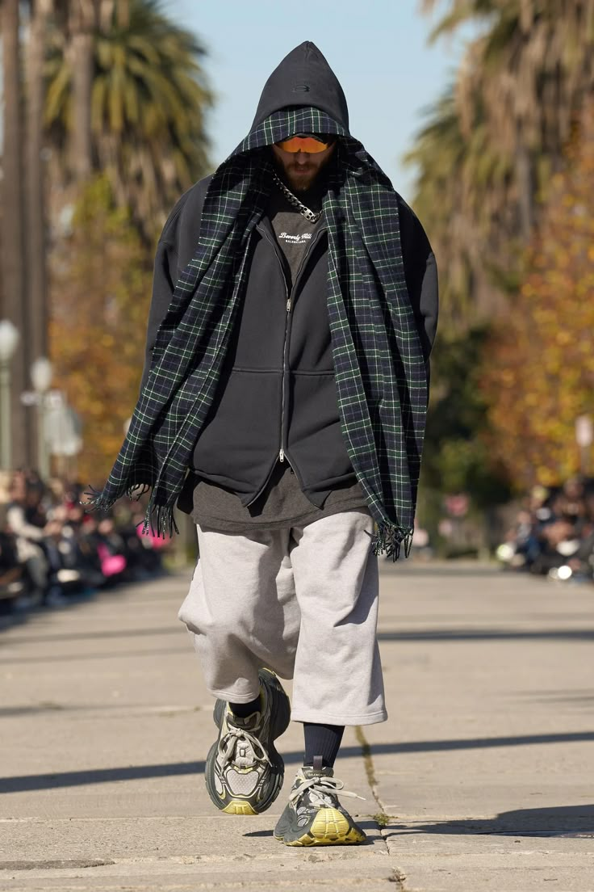
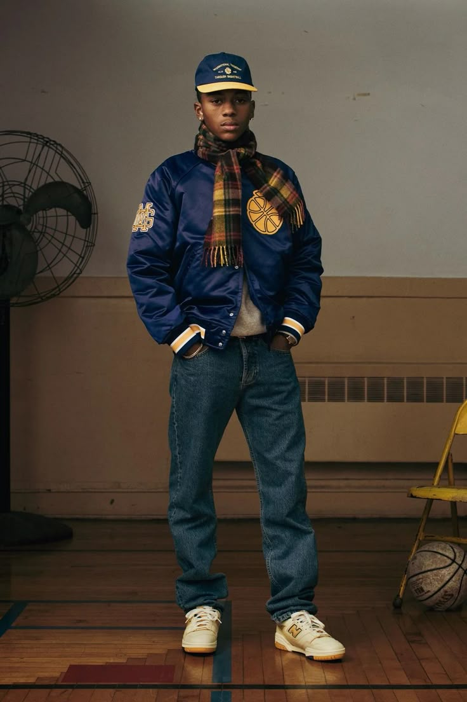

marcas que dominam o streetwear
HERO Magazine - Louis Vuitton X Supreme
As marcas de streetwear dominaram a indústria da moda, se tornando símbolos de inovação, autenticidade e expressão cultural. Inicialmente nascidas nas ruas e impulsionadas por influências do hip-hop, skate e arte urbana, essas marcas transcenderam seus contextos originais e hoje são fundamentais tanto no mercado de luxo quanto no consumo mainstream. Nomes como Supreme, Off-White, Palace, Balenciaga, e A Bathing Ape (BAPE) não são apenas marcas, mas movimentos culturais que impactam desde o design de roupas e acessórios até as colaborações com grandes nomes da moda e esportes.
Essas marcas são pioneiras na fusão entre luxo e streetwear, criando tendências que se espalham rapidamente entre jovens e influenciadores. Elas não apenas vendem roupas, mas também representam um estilo de vida, uma identidade de rua e uma conexão com o universo da música e da arte. A influência dessas marcas vai além das coleções que lançam, tornando-se uma parte essencial da cultura urbana contemporânea e um reflexo de status e autenticidade.
marcas pioneiras
Stüssy (1980 – Califórnia, EUA)
- Fundador: Shawn Stussy Influências
- Influências: Cultura do surf, skate e hip-hop
- Destaque: Camisetas gráficas com o icônico logo manuscrito
A Stüssy é amplamente considerada a marca que deu início ao streetwear moderno. Shawn Stussy era um surfista e shaper californiano que começou a assinar suas pranchas de surf com seu nome em uma tipografia única. Em seguida, ele transferiu essa assinatura para camisetas, vendendo-as junto com as pranchas.
Campanha Fall '19 da Stüssy
A marca rapidamente se tornou um fenômeno underground, atraindo não apenas surfistas, mas também skatistas, rappers e entusiastas da cultura urbana. Nos anos 90, a Stüssy expandiu globalmente, criando um modelo de negócios baseado em exclusividade e drops limitados, algo que inspiraria marcas como Supreme mais tarde.
Supreme (1994 – Nova York, EUA)
- Fundador: James Jebbia
- Influências: Skate, punk rock, hip-hop e arte urbana
- Destaque: Estratégia de exclusividade e colaborações com marcas de luxo
A Supreme começou como uma loja de skate em Manhattan, mas se tornou uma das marcas de streetwear mais influentes do mundo. Sua identidade sempre foi construída em torno da rebeldia, lançando peças em quantidades limitadas para criar uma sensação de escassez e desejo.
Monografia apresentando Supreme de James Jebbia
O icônico box logo vermelho com letras brancas, inspirado na arte de Barbara Kruger, se tornou um dos símbolos mais reconhecíveis da moda urbana. Além disso, a marca revolucionou o mercado com colaborações históricas, incluindo:
- Louis Vuitton (2017): Um dos crossovers mais icônicos entre streetwear e alta moda.
- Nike: Lançamentos frequentes de tênis exclusivos, como os famosos Dunks.
- The North Face: Casacos e mochilas em edições limitadas.
As coleções da Supreme esgotam em minutos e, muitas vezes, são revendidas por preços exorbitantes. Esse modelo ajudou a moldar a cultura do "hype", onde a revenda de streetwear se tornou um negócio bilionário.
A Bathing Ape – BAPE (1993 – Tóquio, Japão)
- Fundador: Nigo
- Influências: Cultura japonesa, hip-hop e design extravagante
- Destaque: Hoodies com zíper até o rosto, camuflagem icônica e tênis Bapesta
A BAPE trouxe uma abordagem única ao streetwear, combinando influências do hip-hop com a estética ousada japonesa. Fundada por Nigo, um fã de moda e música, a marca logo se destacou por seus designs vibrantes, estampas de camuflagem exclusivas e peças de edição limitada.
A Bathing Ape para Milk Magazine (2004)
Os principais símbolos da BAPE incluem:
- Os hoodies com estampa de tubarão – modelos icônicos com zíper que cobre o rosto inteiro.
- Os tênis Bapesta – inspirados no Nike Air Force 1, mas com o logo em forma de estrela.
- O camuflado BAPE – um padrão de camuflagem único, adotado por artistas como Kanye West e Pharrell Williams.
marcas guiando o streetwear atualmente
Balenciaga
A Balenciaga é uma das marcas de luxo que mais influenciaram o streetwear nos últimos anos. Sob a direção criativa de Demna Gvasalia, a marca redefiniu a moda urbana ao misturar elementos do streetwear com o luxo de alta-costura.
Antes da era Demna, a Balenciaga era conhecida por sua alfaiataria sofisticada e designs futuristas. No entanto, a partir de 2015, quando Gvasalia assumiu o comando, a marca passou a explorar uma estética mais urbana e desafiadora, trazendo peças inspiradas no cotidiano, mas elevadas ao nível do luxo.
Balenciaga em Pre-Fall 2024 Fashion Show
Influência da Vetements: Antes de assumir a Balenciaga, Demna foi cofundador da Vetements, uma marca que desafiava os padrões tradicionais da moda com roupas oversized, estampas irônicas e referências à cultura pop. Esse DNA foi levado para a Balenciaga, tornando a grife uma potência no streetwear.
A Balenciaga redefiniu o que significa misturar luxo e streetwear, tornando-se uma referência para outras marcas de alta moda. O sucesso da marca provou que peças casuais, como tênis, moletons e jeans desgastados, podem ser tão desejadas quanto um vestido de alta-costura.
- Influência na Cultura Pop: Artistas como Kanye West, Travis Scott, Cardi B e Justin Bieber frequentemente usam Balenciaga, reforçando sua presença na cultura streetwear com o Kanye West fazendo da marca um pilar fundamental no visual do Yeezy Gap Engineered by Balenciaga.
- Criação do "Hype de Luxo": A estratégia da Balenciaga envolve lançamentos limitados e preços elevados, criando um hype semelhante ao da Supreme.
Aimé Leon Dore
A Aimé Leon Dore (ALD) é uma das marcas que melhor equilibra o streetwear e a moda sofisticada. Fundada em 2014 por Teddy Santis, a marca de Nova York rapidamente ganhou destaque por seu design minimalista e inspirações retrô, trazendo um toque refinado à estética urbana. Desde o início, ALD focou em peças atemporais, evitando tendências efêmeras e apostando em uma identidade forte, com designs que misturam a casualidade do streetwear com a sofisticação da alfaiataria.
Aimé Leon Dore em campanha Fall / Winter 2023 SONNY New York
Principais destaques:
- Parceria com New Balance – Reviveu o NB 550, tornando-o um dos sneakers mais desejados
- Estética retrô e atemporal – Hoodies, jaquetas varsity, tricôs e alfaiataria casual.
- DNA nova-iorquino autêntico – Inspirada no lifestyle do Queens e do Bronx.
- Exclusividade – Lançamentos limitados, sucesso global e forte presença na moda urbana.
Palace
A Palace é uma das marcas mais influentes e importantes no cenário do streetwear atual, especialmente quando falamos de skatewear e da estética britânica do estilo urbano. Fundada em 2009 por Lev Tanju, a marca rapidamente se destacou por sua combinação de elementos de skate, humor irreverente e uma forte identidade visual.
A Palace é conhecida por seu design único e irreverente, misturando uma estética que remete ao skate clássico com referências pop e elementos de humor. Seu logo, com o triângulo formado pelas letras “P” e “A” (chamado de “Tri-Ferg”), se tornou um ícone instantâneo e é amplamente reconhecido na cultura urbana. Além disso, a marca se destaca por sua abordagem retrô, muitas vezes fazendo referências ao skate dos anos 90, com peças que lembram a estética de marcas antigas de skate como Santa Cruz e Powell Peralta. Seu estilo muitas vezes mistura cores vibrantes, estampas ousadas e tipografias divertidas.

Campanha da colaboração Palace X Gucci (2022)
A marca também tem se destacado por suas colaborações de alto nível. Alguns exemplos notáveis incluem:
- Adidas: Palace tem uma colaboração de longa data com a Adidas, com lançamentos de sneakers exclusivos e peças de vestuário. A colaboração é marcada pelo uso de designs arrojados e influências do skate e esportes.
- Ralph Lauren: Em uma colaboração que uniu o estilo clássico do preppy com o urbano do skate, a Palace e Ralph Lauren criaram peças únicas que misturam o melhor dos dois mundos.
- The North Face: A parceria com The North Face trouxe uma linha de jaquetas e casacos de alta performance com a estética descomplicada e funcional da marca.
Essas colaborações com grandes nomes ajudam a manter a Palace relevante no mundo do streetwear e ampliam seu alcance, permitindo que ela seja reconhecida tanto no universo do skate quanto nas passarelas da moda urbana e luxo.
Supreme
A Supreme continua sendo uma das marcas mais icônicas e influentes no universo do streetwear, mantendo uma enorme relevância até os dias atuais, apesar da evolução da moda urbana e do aumento das concorrentes. Desde a sua fundação em 1994, a marca se consolidou como um verdadeiro símbolo da cultura do streetwear, criando uma fórmula de sucesso que mistura exclusividade, colaborações de alto nível e uma comunidade de fãs dedicados.
Embora o streetwear tenha mudado ao longo dos anos, a Supreme continua relevante e inovadora. Ela tem uma presença significativa nas passarelas, em editoriais de moda e nas redes sociais, mantendo sua posição como líder do movimento. A marca soube evoluir com o tempo, mas sem perder a essência que a tornou um fenômeno cultural.
Vídeo promocional da coloboração Supreme X Thrasher
A Supreme também é famosa pelas suas colaborações com grandes marcas, designers e artistas de diversas áreas, criando coleções de itens exclusivos que geram grande antecipação e hype. Algumas das colaborações mais impactantes incluem:
- Louis Vuitton (2017): Esta parceria foi uma das mais comentadas no mundo da moda, unindo a alta moda da Louis Vuitton com o estilo streetwear irreverente da Supreme. As peças da coleção, que incluíam roupas e acessórios, foram imediatamente disputadas e esgotaram em minutos.
- Nike: Supreme tem uma longa parceria com a Nike, criando modelos de tênis exclusivos, como o Air Force 1, Dunk e outros. Esses tênis têm uma demanda muito alta, sendo frequentemente revendidos por preços inflacionados no mercado secundário.
- The North Face: As coleções de roupas de frio e acessórios com a The North Face são extremamente populares, combinando o estilo utilitário da marca com o toque exclusivo da Supreme.